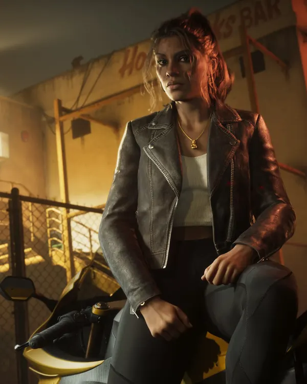
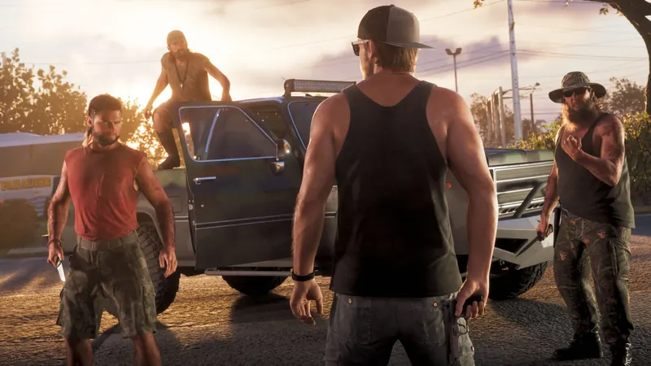

Leonida: guia de GTA VI
O estado de GTA VI, de Vice City às Keys.
Jason e Lucia
Ele quer uma vida tranquila nas Keys. Ela acabou de sair da prisão. Um golpe fácil dá errado e os dois vão parar no meio de algo bem maior.
Conhecer os personagens



O guia
Comece por aqui
Primeira vez no Guia Leonida?
O que é Leonida
É o estado fictício de GTA VI, inspirado na Flórida. Tem seis regiões principais, de Vice City aos pântanos de Grassrivers e às montanhas do Mount Kalaga.
Ver as seis regiõesDicas para iniciantes
- Ajuste legendas e acessibilidade antes de jogar.
- Siga a história: ela ensina os controles.
- Explore uma região de cada vez.
Feito para todo mundo
Mude o tema, aumente a fonte, ative o alto contraste ou a fonte para dislexia no botão Acessibilidade, no topo de qualquer página.
Conhecer os recursos
Catálogo
Ver o catálogo completo
Destaques do guia
Carregando destaques…
Novidades
Linha do tempo de GTA VI
Os marcos oficiais, do primeiro trailer ao lançamento. Itens novos desde sua última visita ganham um selo.
Acompanhe seu progresso
Marque as regiões visitadas, as missões e os veículos que você já testou. O progresso fica salvo na sua conta.